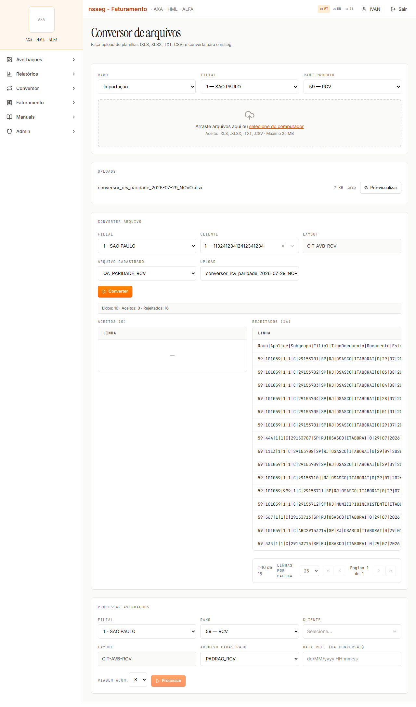
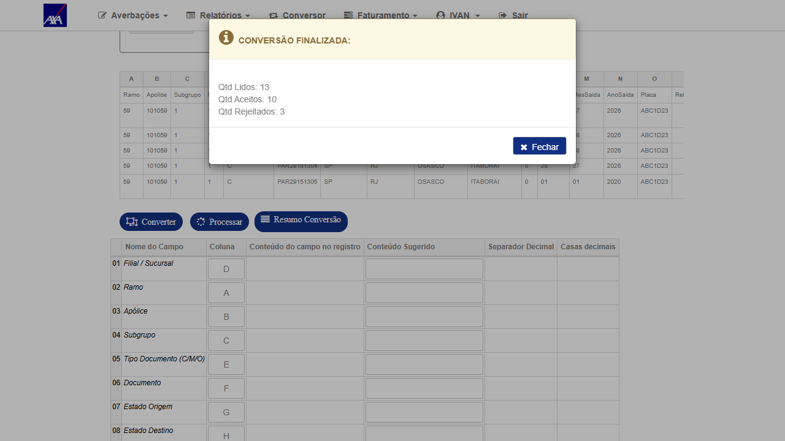
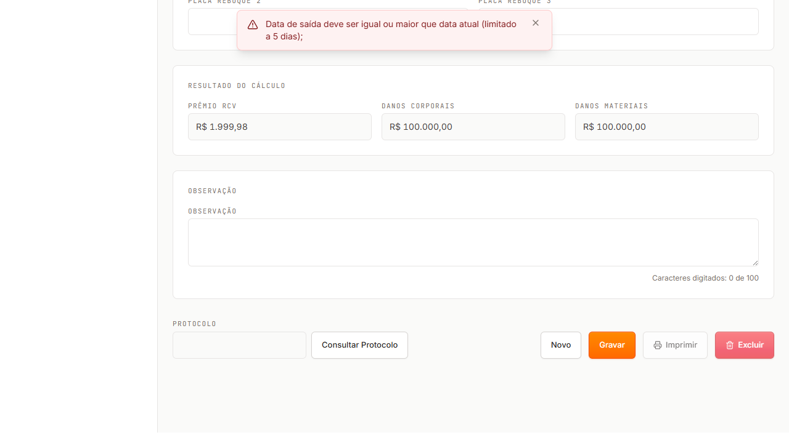

/app/conversor
🗄️ /alfa/citnet/Conversor/Conversor
🏢 Filial 1 · Cliente 1 — 11324123412412341234
📄 Layout QA_PARIDADE_RCV (CIT-AVB-RCV, 19 campos)
🗓️ 29/07/2026
O CITNET atual converteu 12 de 15 linhas e processou 4 averbações, aplicando corretamente todas as regras testadas. O CITNET novo rejeitou 16 de 16 linhas na conversão — com qualquer layout, inclusive um pré-existente do time — com a mensagem "Atributo obrigatório 'Filial / Sucursal' está vazio", mesmo com a filial preenchida e mapeada. Nenhuma regra de negócio chega a ser exercitada pelo Conversor do novo.
Ponto importante: as regras existem no backend novo — validado à parte pela tela de averbação, que devolve a mensagem "Data de saída deve ser igual ou maior que data atual (limitado a 5 dias);", idêntica à do atual. O bloqueio é no Conversor, não no motor de regras.
Mesmo arquivo, mesmo cliente, mesmo layout cadastrado (QA_PARIDADE_RCV, 19 campos do padrão CIT-AVB-RCV):
| Etapa | CITNET atual | CITNET novo |
|---|---|---|
| Conversão | 15 lidos · 12 aceitos · 3 rejeitados | 16 lidos · 0 aceitos · 16 rejeitados |
| Processamento | 12 lidos · 4 aceitos · 8 rejeitados (todos com motivo de negócio correto) | não alcançado — botão Processar permanece desabilitado |
A mensagem de rejeição é a mesma para todas as linhas, inclusive as que têm a filial preenchida. Exemplo do conteúdo rejeitado (a 4ª posição é a filial):
59|101059|1|1|C|29153701|SP|RJ|OSASCO|ITABORAI|0|29|07|2026|ABC1D23||||L01 data hoje → "Atributo obrigatório 'Filial / Sucursal' está vazio"
O mesmo arquivo foi reconvertido no novo usando itamar_RCV — layout pré-existente, criado pelo time, não por este teste — com resultado idêntico: 16 lidos · 0 aceitos · 16 rejeitados, mesma mensagem. O layout criado no atual aparece normalmente na lista do novo (mesma base), então a leitura do cadastro funciona; o que não funciona é a aplicação do mapeamento DE/PARA (coluna da planilha → atributo do layout). No atual, o mesmo cadastro converte 12 linhas.
O Conversor RCV do novo está inoperante: nenhuma averbação pode ser gerada por arquivo. Como consequência, nenhuma das regras de negócio do Conversor pode ser homologada enquanto isso não for corrigido.
1 — SAO PAULO → Ramo-Produto 59 — RCV → enviar o arquivo (anexo abaixo) → bloco "Converter arquivo": Cliente 1, Layout QA_PARIDADE_RCV (ou itamar_RCV), Upload = arquivo enviado → Converter. Endpoint: POST /api/conversor/converter → 200 com {"lidos":16,"aceitos":0,"rejeitados":16}.

No atual, ao clicar em Converter abre o diálogo "Informe a Linha Inicial:" — informando 2, o cabeçalho da planilha é descartado e ele lê as 15 linhas de dados. O novo converte direto, sem perguntar, e lê 16 — a primeira "linha rejeitada" é literalmente o cabeçalho (Ramo|Apolice|Subgrupo|Filial|…).
Mesmo depois de resolver o C1, sem esse controle todo arquivo com cabeçalho gerará uma rejeição extra (ou, pior, uma averbação inválida se o cabeçalho passar pelas validações).
A matriz abaixo foi executada no CITNET atual com um único arquivo de 15 linhas. É a referência que o novo precisa reproduzir — todas as mensagens são o texto exato devolvido pelo sistema.
| # | Cenário | Massa | Etapa | Resultado no CITNET atual (texto exato) |
|---|---|---|---|---|
| L01 | Data de saída = hoje | apólice 101059 (TPP) | Processamento | ACEITO — averbação 2026000012, prêmio R$ 1.999,98 |
| L02 | Data = hoje + 5 (limite permitido) | 101059 | Processamento | ACEITO — averbação 2026000013, prêmio R$ 1.999,98 |
| L03 | Data = hoje + 6 | 101059 | Processamento | REJEITADO — "Data de saída deve ser igual ou maior que data atual (limitado a 5 dias)" |
| L04 | Data anterior ao dia atual (ontem) | 101059 | Processamento | REJEITADO — "Data de saída deve ser igual ou maior que data atual" |
| L05 | Data 01/01/2020 (retroativa > 365 dias) | 101059 | Processamento | REJEITADO — "Data de saída deve ser igual ou maior que data atual / Data de saída deve ser igual ou menor que data atual (limitado a 365 dias)" |
| L06 | Documento duplicado (mesmo CT-e de L01) | 101059 | Processamento | REJEITADO — "Conhecimento já cadastrado para outra Averbação" |
| L07 | Apólice cancelada | apólice 444 (cancelada 11/06/2026) | Processamento | REJEITADO — "Data de Saída maior que Data de Cancelamento da Apólice" |
| L08 | Apólice sem condição comercial | apólice 1113 | Processamento | REJEITADO — "Erro - Não existe condição comercial cadastrada, por favor realize o cadastro!" |
| L09 | Placa em branco (obrigatório) | 101059 | Conversão | REJEITADO — CAMPO=Placa do Veículo … MSG=CONTEÚDO NÃO INFORMADO |
| L10 | Estado de origem em branco | 101059 | Conversão | REJEITADO — CAMPO=Estado Origem … MSG=CONTEÚDO NÃO INFORMADO |
| L11 | Subgrupo inexistente (999) | 101059 | Conversão | REJEITADO — CAMPO=Subgrupo CONTEUDO=999 MSG=SUBGRUPO NÃO CADASTRADO |
| L12 | Município de origem inexistente | 101059 | Processamento | ACEITO — averbação 2026000014 gravada com c_cdd_ori = 0 (município descartado, não bloqueia) |
| L13 | Apólice suspensa (suspensão aberta desde 17/07) | apólice 567 | Processamento | REJEITADO — "Apólice suspensa para a data de saída informada" |
| L14 | Documento alfanumérico | 101059 | Processamento | REJEITADO — "Id Viagem deve conter somente números" |
| L15 | Controle positivo (CC tipo PRFX) | apólice 333 | Processamento | ACEITO — averbação 2026000050, prêmio R$ 150,00 (prêmio fixo) |
Regras confirmadas no código (CitNetServiceNac/AverbacaoNacionalService.cs e CitNetAverbacaoNac/CLSNACCALC.cs): a janela D+5 e a proibição de data retroativa valem para apólice com e_avb = 'D' (diária) — que é o caso de todas as 6.441 apólices RCV da filial 1 neste ambiente; o teto de 365 dias é geral; o prêmio RCV é calculado por tipo de CC — PRFX (valor fixo), PRVCML (por tipo de viagem: urbano / mesmo estado / estados vizinhos / não vizinhos) e TPP ((DC + DM) × taxa/100).
Para separar "regra não existe" de "regra não é alcançada", a mesma linha L03 (data = hoje + 6, apólice 101059) foi lançada pela tela de averbação do novo:
| Sistema | Mensagem |
|---|---|
| CITNET atual (Conversor) | "Data de saída deve ser igual ou maior que data atual (limitado a 5 dias)" |
| CITNET novo (tela de averbação) | "Data de saída deve ser igual ou maior que data atual (limitado a 5 dias);" — idêntica |
O novo inclusive rotula a tela como "Nova Averbação RC-V (Apólice Diária)", mostrando que identifica o e_avb='D' que governa a regra. Ou seja: a validação está implementada — falta o Conversor entregar as linhas a ela.

Arquivo único de 15 casos usado nos dois sistemas (19 colunas do layout padrão CIT-AVB-RCV; cabeçalho na linha 1):
massa-conversor-rcv-15-casos.xlsx.
Gerador versionado em testes-automatizados/sprint-11-citweb/conversor-rcv-paridade/gerar_massa_conversor_rcv.py (datas relativas a "hoje", documentos únicos por execução).
Massa de apólices (todas do cliente 1, filial 1, base smt-hom-citweb-axa-alfa): 101059 TPP com CC vigente · 333 PRFX (controle positivo) · 444 cancelada em 11/06/2026 · 1113 sem condição comercial · 567 com suspensão em aberto desde 17/07/2026.
q_avb_cme = 0), prêmio calculado menor que o mínimo, prêmio maior (mantém o calculado) e proporcional. Fórmula do código: (PMM ÷ dias do mês) × dias vigentes, com PMM integral quando a vigência inicia no dia 1º.765 e 567 (PMM 100, vigência inicia 13/07/2026 → proporcional esperado R$ 58,06), 123321 (PMM 100, inicia 02/07 → R$ 93,55), 333 (PMM 100 com prêmio 2.400 → prêmio maior prevalece), apólices 5904… (PMM 500 sem movimento em 07/2026 → sem embarque).567 tem 3 suspensões (13–14/07, 15–16/07 e aberta desde 17/07). O código zera o prêmio comercial da prévia quando há suspensão no período (if (suspensaoApolice) fecha.v_pmo_cml = 0) e proporcionaliza o PMM pelos dias vigentes.444 (cancelada 11/06/2026) contra 333 (mesma vigência, não cancelada) — no cálculo do PMM o fim de vigência passa a ser a data de cancelamento (dataFimVig = d_can_apo), competência 06/2026 → proporcional esperado R$ 36,67.